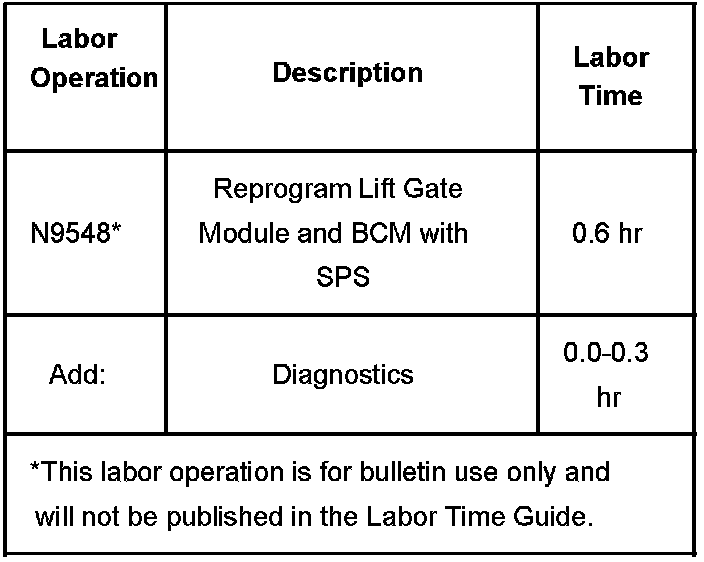

Body - Power Lift Gate/Liftgate Remains Locked
Bulletin No.: 06-08-47-002ADate: March 28, 2006
TECHNICAL
Subject:
Power Lift Gate/Liftgate Remains Locked (Reprogram BCM and Lift Gate Module [LGM] with Updated Software)
Models:
2007 Cadillac Escalade
2007 Chevrolet Tahoe
2007 GMC Yukon
with Power Lift Gate (RPO E61)
Supercede:
This bulletin is being revised to use Remote programming instead of Pass-Thru. Programming using the Remote method will prevent many, if not all, of the DTCs from setting in other modules. The labor time has been reduced to reflect this change. Please discard Corporate Bulletin Number 06-08-47-002 (Section 08 Body & Accessories).
Condition
Some customers may comment on any of the following conditions with the power liftgate:
^ If the vehicle is locked and then the unlock button is pressed on the transmitter once for the driver's door unlock, a second time for all doors, and then a third time for the lift gate, the lift gate will be locked even though the other doors are unlocked.
^ If the vehicle is already unlocked (all doors unlocked), and the unlock button is pressed on the transmitter once for the driver door unlock, the lift gate will be locked. Under these conditions, the lift gate cannot be opened in either manual or automatic mode using the exterior handle.
^ The overhead console switch does not work.
Cause
Engineering has determined that these conditions are caused by software anomalies found in the BCM and in the Lift Gate Module (LGM) software.
Correction
DO NOT REPLACE THE LIFT GATE MODULE OR BCM.
Use the following procedure to reprogram the BCM with software P/N 15901392, and PLGM with software P/N 15912911 (released with TIS broadcast March 5, 2006 or later) to correct this condition.
1. If the customer brought their vehicle in for any other concerns, be sure to check all modules and note any DTCs that have been set. These DTCs may be related to another customer concern listed on the repair order.
2. Using the TIS Remote programming method, reprogram the Lift Gate Module.
3. After programming is complete for the lift gate module, turn off the ignition for 30 seconds.
4. Use the Tech 2(R) to perform the Lift Gate Calibration procedure, which resets the limits for the open/close function of the lift gate.
Lift Gate Calibration Procedure Tech 2(R) Path:
4.1. Body
4.2. LGM (Lift Gate Module)
4.3. Special Functions
4.4. Lift Gate Open/Close Test
5. Using TIS Remote programming method, reprogram the BCM.
6. After programming is complete for the BCM, turn off the ignition for 30 seconds.
7. Use the Tech 2(R) to perform the BCM Module Setup.
^ Select "Diagnostics".
^ Select Model Year.
^ Select Vehicle Type.
^ Select Make.
^ Select Product Line.
^ Select Product Series.
^ F1: Body
^ Select HVAC System.
^ Select "Body Control Module".
^ F5: Module Set-up
^ F0: Set-up SDM Primary Key in BCM
Important:
The labor operation listed in this bulletin includes the necessary time to check and clear all DTCs.
8. After the BCM is complete, check and clear all DTCs using the following Tech 2(R) path:
^ Select Diagnostic.
^ Select Model Year.
^ Select Vehicle Type.
^ Select Product Make.
^ Select Product Line.
^ Select Product Series.
^ F3: Vehicle Control Systems
^ Select Engine Type.
^ F0: Vehicle DTC Information
^ F0: DTC Display
^ Check and clear all DTCs from modules.
Warranty Information

For vehicles repaired under warranty, use the table.

Disclaimer